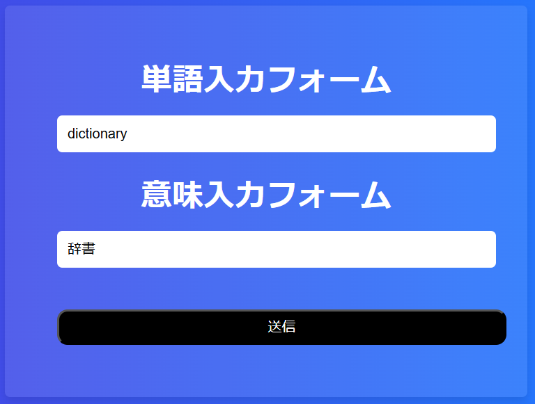
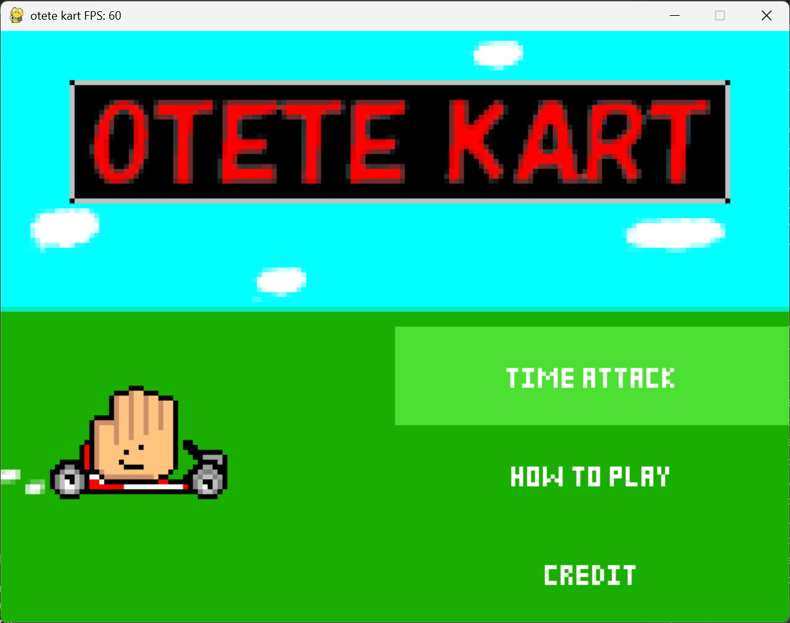
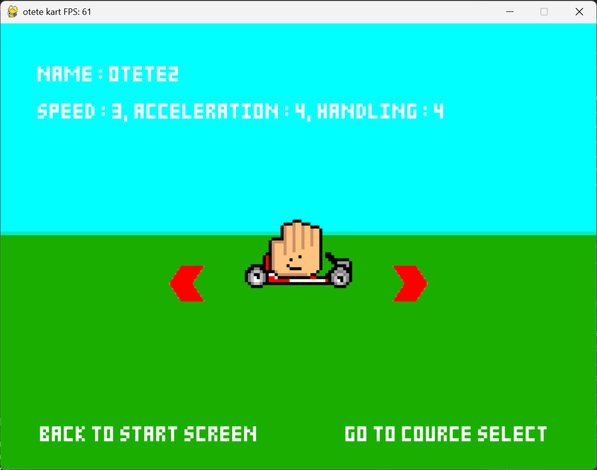
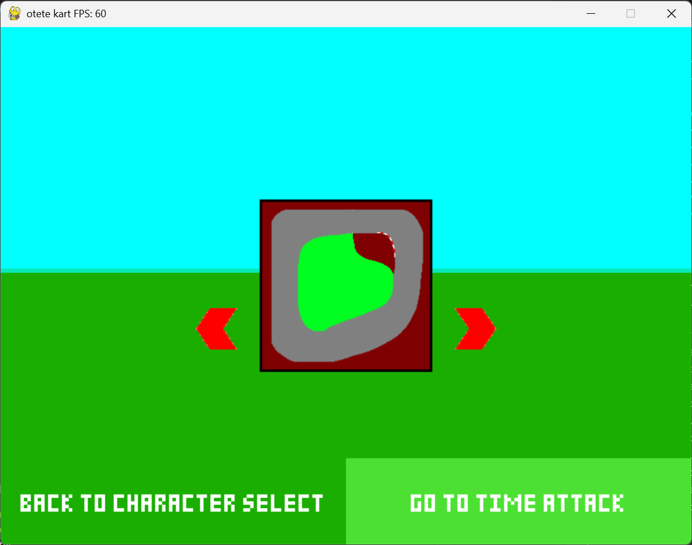
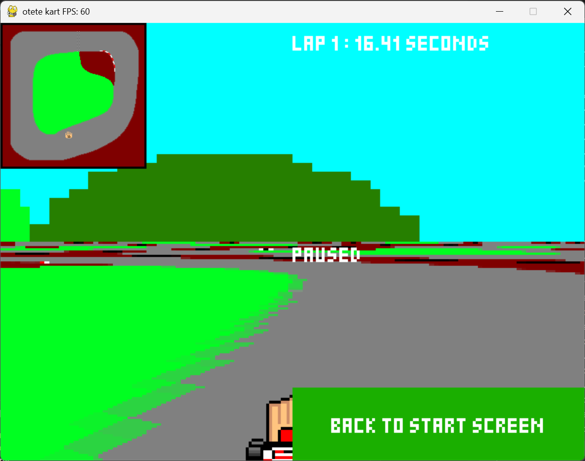
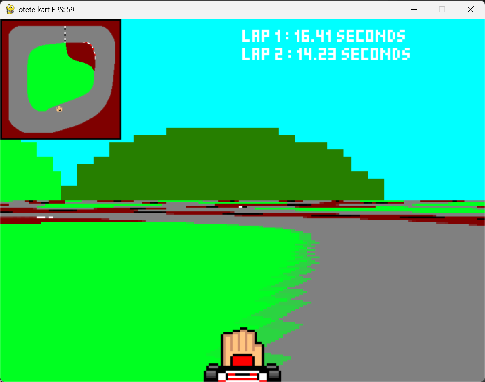
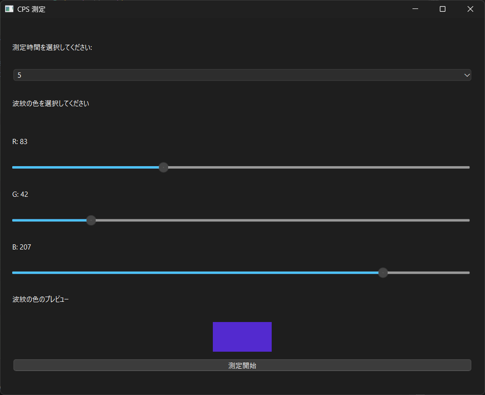
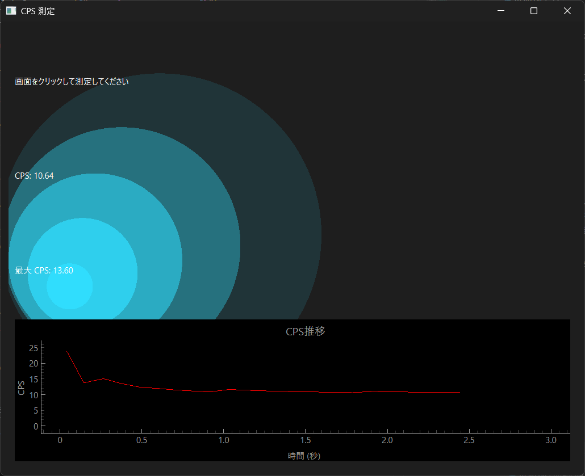
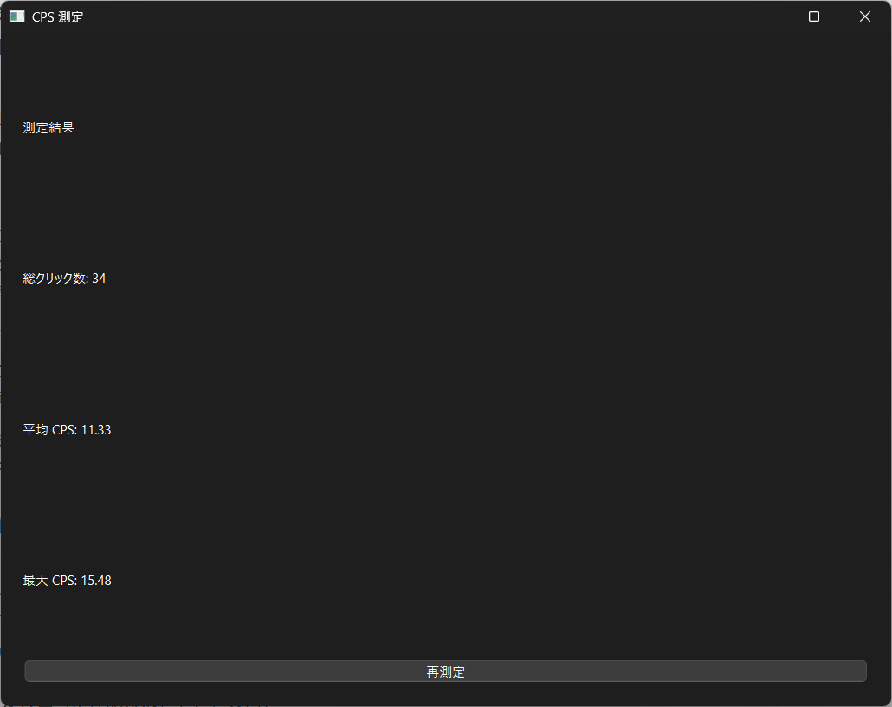
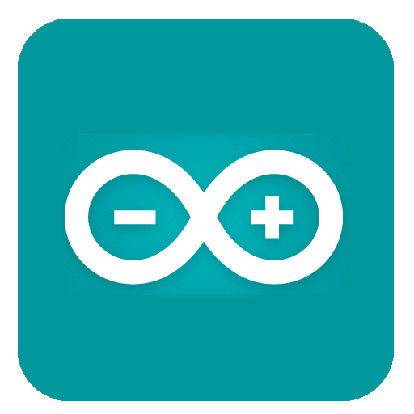

Profile
| Name | 高橋 快 (Takahashi Kai) |
|---|---|
| Birthday | 2007/12/8 |
| Age | |
| Hobby | ピアノ |
| Favorite | 蕎麦 |
2023年に大阪公立大学工業高等専門学校へ入学。現在は4年知能情報コースに在籍。
クラブはろぼっと倶楽部に所属し、ロボットの制御を務めています。
Works
画像を押すと、githubのレポジトリに飛びます。

おててカート
制作時期: 2024年12月~2025年1月
制作時間: 25時間
概要: Pythonを用いた擬似3D（Mode7）レーシングゲーム。プレイヤーは異なる性能を持つ4種類のキャラクターから選択し、4つのコースでタイムアタックを行う。NumbaによるJITコンパイルを用いてPython特有の実行速度の課題を克服し、リアルタイムでの安定したフレームレートを達成した。





Cps Counter
制作時期: 2025年2月
制作時間: 11時間
概要: マウスクリックの秒間回数（CPS: Click Per Second）を計測・可視化するGUIアプリケーション。結果のグラフ化機能、波紋エフェクトなどの視覚的フィードバックを提供した。



mkworld-wr-app
制作時期: 2025年7月
制作時間: 15時間
概要: マリオカート8デラックスのタイムアタックの記録を閲覧・分析するwebアプリ。PythonのFlaskフレームワークとBeautifulSoupを使用し、外部サイトのhttps://mkwrs.com/mk8dx/からデータをスクレイピングしている。世界記録一覧表示、コース別履歴の閲覧、国別人別ランキング表示、記録の比較とフィルタリングといった機能を提供。
js-dom-event-tutorial
制作時期: 2025年7月
制作時間: 30時間
概要: JavaScriptのDOM操作とイベントリスナー（EventListener）の基礎を学ぶための実践的なチュートリアル。DOMの基礎知識、要素の操作・追加・削除、イベントリスナーについて解説し、デモ機能を試すことができる。また、CodeMirrorライブラリを使用して、ページ上のエディタでHTML/CSS/JSを直接編集し、その場で実行確認できる機能も備わっている。
pid_visualization
制作時期: 2025年8月
制作時間: 3時間
概要: 制御工学におけるPID制御およびカスケード制御の挙動をページ上で視覚的に比較・学習できるシミュレーター。比例（P）積分（I）微分（D）の各ゲインをスライダーで調整し、目標値への追従性やオーバーシュートをグラフで確認することができる。単一PID制御とカスケード制御の二つの手法を比較することができる。
2025fes_admin_gui
制作時期: 2025年10月~11月
制作時間: 10時間
概要: 2025年の高専祭で使用したスタッフ向けのユーザ管理・状態確認ツール（GUI）。2025年の高専祭の展示物における、参加者の進捗や状態をリアルタイムで更新することができる。参加者の認証として、配布したIDとパスワードだけでなく、html5-qrcodeライブラリを使用しQRコードからも認証できるように対応した。
2025fes_api
制作時期: 2025年10月~11月
制作時間: 40時間
概要: 2025年の高専祭で使用した受付・認証システムのバックエンド（APIサーバー）。Node.jsとExpress、MongoDBを使用しており、参加者に紐づいたQRコードを生成・配布し、受付でそれを読み取ることで、展示物でのステータスを管理することができる。Dockerコンテナで動作するNode.jsサーバーをngrokで外部公開し、MongoDBにデータを保存するという構成にしている。
mc-todo-app
制作時期: 2025年11月
制作時間: 25時間
概要: Minecraftの世界観を再現したTodo管理webアプリ。「タスクをこなす作業を、もっと楽しく、達成感のあるものに」というコンセプトで制作しており、React、TypeScript、Tailwind CSSを使用し、Minecraft風のデザインや演出にこだわりました。タスクをブロックとして視覚化し、タスクを完了する際、ブロックをクリックすると、ゲーム内と同じようにひび割れアニメーションと破片が飛び散るエフェクトが発生し、ブロックが壊れることでタスクが消去される。タスクの優先度に応じて土、石、木、鉄、黒曜石といった異なるブロックに見た目が変わるようになっている。ブラウザのLocalStorageを使用しており、ページを閉じてもタスクが保持される。完了したタスクは「実績」のようにインベントリ画面（完了済リスト）で確認・管理できます。
card_game_app
制作時期: 2026年1月~2月
制作時間: 15時間
概要: QRコードを利用したリアル参加型の神経衰弱ゲームwebアプリ。従来のトランプの代わりに、現実空間に配置したQRコードをスマートフォンのカメラでスキャンして遊ぶ、デジタルとリアルを融合させている。HTML/JavaScript/CSSで制作しており、インストールなしにブラウザからすぐに使えるようにしている。ユーザは部屋のあちこちにQRコードを貼り、実際に歩き回って探し、カメラで読み取ることでカードを「めくる」操作を行う。ゲームに使用するQRコードはアプリ内で生成・印刷可能で、遊ぶ環境や人数に合わせて枚数を調整することができる。スキャン時には、VOICEVOXを使用したキャラクターの応援音声を聞くことができる。
live-voting-app
制作時期: 2026年1月~2月
制作時間: 40時間
概要: ユーザが作成したアンケートに対して、世界中の参加者がリアルタイムで投票・参加できる投票webアプリ。コンセプトとして、「誰がいつ投票したか」を可視化し、投票という行為そのものを楽しむUX（ユーザー体験）を追求した。Next.jsを使用しており、SupabaseのRealtime機能を利用し、他のユーザの投票が、画面のリロードなしに即座に自分の画面に反映されるようになっている。誰かが投票すると画面上に流れ星や花火（切り替え可能）などのエフェクトが発生し、一体感を演出している。投票のキーワード検索や新着順・人気順・期限順でのソートが可能。ログイン不要でPWA対応しており、モバイル端末のホーム画面に追加してアプリとして利用できる。
image-cropping-app
制作時期: 2026年3月
制作時間: 2時間
概要: 複数の画像を一括でトリミング（切り抜き）し、保存するためのPythonアプリ。GUI（Tkinter）を使用して、直感的に画像の切り抜き範囲を指定できる。複数の画像に対して同じ切り抜き設定を適用したり、それらをまとめてPDFや画像ファイルとして保存したりすることができる。アスペクト比を固定することができ、A4、B5、ハガキサイズ（縦・横）のサイズ比率に固定することができる。
FlashPhrase
制作時期: 2026年3月
制作時間: 15時間
概要: 英単語やフレーズを効率的に学習するためのWebアプリ。フラッシュカード形式で英単語やフレーズが次々と表示され、それらを素早く確認していくことで記憶の定着を図る「Word Mode」、学習した内容を復習・確認するための「Test Mode」があり、理解度を確認できるようになっている。単語とフレーズはそれぞれ1000語収録されている。
Skill
Language

Python

HTML/CSS

JS

C++
Tool

VSCode

Blender
ROS2 Humble

Arduino IDE